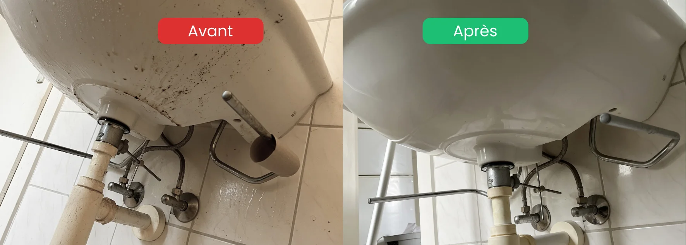

- Documentation immédiate : photos et vidéos datées dès la découverte, avant toute intervention
- Cadre légal : le bailleur peut imputer les frais de remise en état au locataire (CO art. 267)
- Assurance : certaines polices RC locataire ou assurance immeuble peuvent couvrir une partie des frais
- Délai : agir rapidement limite les dégâts (moisissures, nuisibles, odeurs qui s'incrustent)
- Professionnel : faire appel à une entreprise spécialisée protège le bailleur juridiquement
Une situation plus fréquente qu'on ne le pense
Chaque année en Suisse, des propriétaires et des régies découvrent à la remise des clés un logement dans un état qu'ils n'auraient pas imaginé. Meubles abandonnés, déchets accumulés sur des mois, moisissures envahissantes, nuisibles installés, odeurs persistantes — la réalité peut être choquante.
Ce type de situation n'est pas réservé aux logements sociaux ou aux locations précaires. Elle touche tous les types de biens et tous les profils de locataires. Derrière un logement insalubre, il y a souvent une détresse humaine réelle — dépression, isolement, troubles psychiques — mais cela ne change pas les obligations légales ni la nécessité pour le bailleur d'agir vite.
Un logement laissé insalubre à remettre en état ?
Propriétaires & régies · Photos avant/après · Réponse 24h · Discrétion totale
Voir le service insalubre & extrême →Les premières heures : documenter avant tout
C'est l'étape la plus importante et la plus souvent négligée. Avant de toucher quoi que ce soit, documenter l'état du logement de manière exhaustive.
Ce qu'il faut faire immédiatement
- Photographier et filmer chaque pièce, chaque zone problématique, avec date et heure visibles
- Lister les dégradations par pièce (sols, murs, plafonds, équipements)
- Conserver les preuves d'un éventuel état des lieux d'entrée pour comparer
- Ne rien jeter, ne rien déplacer avant d'avoir tout documenté
Pourquoi c'est crucial
Sans documentation préalable, le bailleur ne peut pas prouver que les dégradations sont imputables au locataire sortant. En cas de litige devant le Tribunal des baux, c'est cette documentation qui fait la différence entre une indemnisation et un refus.
Le cadre légal en Suisse : droits du bailleur
Le droit suisse protège le bailleur face à un locataire qui restitue un logement en mauvais état. Voici les bases légales à connaître.
L'obligation de restitution (CO art. 267)
Selon l'article 267 du Code des obligations suisse, le locataire est tenu de restituer la chose dans l'état qui résulte d'un usage conforme au contrat. Les dégradations allant au-delà de l'usure normale sont à la charge du locataire.
Un logement insalubre dépasse largement l'usure normale. Les frais de nettoyage professionnel, de débarras et de remise en état sont en principe imputables au locataire.
La caution
La caution (dépôt de garantie, généralement 2 à 3 mois de loyer) peut être utilisée pour couvrir les frais de remise en état. Si les frais dépassent la caution, le bailleur peut engager une procédure de recouvrement.
Le procès-verbal d'état des lieux
Un procès-verbal d'état des lieux de sortie établi en présence du locataire (ou à défaut, avec deux témoins) est indispensable pour documenter officiellement les dégradations et engager des démarches.
Les assurances : ce qui peut être couvert
Avant d'engager des frais, vérifiez les couvertures d'assurance disponibles.
| Type d'assurance | Ce qui peut être couvert | À vérifier |
|---|---|---|
| RC locataire | Dégâts causés involontairement | Si le locataire avait une RC en cours |
| Assurance immeuble | Dégâts des eaux, moisissures structurelles | Selon les conditions générales |
| Assurance perte de loyer | Loyers perdus pendant la remise en état | Si durée de remise en état > 1 semaine |
| Assurance protection juridique | Frais de procédure en cas de litige | Si incluse dans votre police immeuble |

Les étapes de remise en état
Une fois la documentation faite et les assurances contactées, la remise en état peut commencer. Elle suit un ordre précis.
Étape 1 : sécuriser le logement
Avant tout nettoyage, s'assurer que le logement est sécurisé :
- Couper l'électricité si des risques sont identifiés
- Vérifier l'absence de nuisibles actifs (traitement préalable si nécessaire)
- Aérer 24 à 48h si l'air est vicié
Étape 2 : débarrasser
Évacuer tout ce qui a été abandonné par le locataire, selon la procédure légale :
- Trier ce qui peut être donné, recyclé ou éliminé
- Conserver les objets de valeur identifiable pendant un délai raisonnable
- Documenter chaque étape de l'évacuation
Étape 3 : nettoyer et désinfecter
C'est l'étape centrale. Elle demande un matériel adapté et une méthode rigoureuse :
- Nettoyage en profondeur de toutes les surfaces
- Désinfection complète des zones sensibles (cuisine, WC, joints, poignées)
- Traitement des moisissures (produits spécifiques, selon l'ampleur)
- Dégraissage des cuisines et hottes
- Nettoyage final sols, murs et plafonds si nécessaire
Étape 4 : évaluer les travaux de réparation
Après le nettoyage, l'état réel des surfaces apparaît clairement. C'est à ce stade qu'on identifie :
- Les peintures à refaire
- Les revêtements de sol à remplacer
- Les joints à changer
- Les équipements endommagés ou manquants
Étape 5 : établir le décompte final
Rassembler toutes les factures (nettoyage, débarras, réparations) et les confronter à la caution disponible. En cas de dépassement, engager la procédure de recouvrement auprès du locataire.
Pourquoi faire appel à une entreprise spécialisée
Face à un logement insalubre, la tentation est parfois de gérer soi-même pour économiser. C'est presque toujours une mauvaise idée.
Protection juridique
Une facture d'entreprise professionnelle est une preuve recevable devant le Tribunal des baux. Un nettoyage fait soi-même ne peut pas être valorisé de la même façon en cas de litige avec le locataire.
Efficacité et rapidité
Un logement insalubre remet en location plus vite avec une intervention professionnelle : 1 à 3 jours selon l'ampleur, contre plusieurs semaines en gestion interne.
Sécurité sanitaire
Les logements insalubres présentent des risques réels (moisissures toxiques, nuisibles, bactéries). Une équipe formée dispose des EPI adaptés et des produits professionnels pour traiter ces risques en toute sécurité.
Documentation professionnelle
Nous fournissons systématiquement des photos avant/après et une facture détaillée — deux éléments indispensables pour votre dossier de recouvrement.
Ce que nous observons sur le terrain
Dans notre expérience, les situations de logement insalubre côté propriétaire suivent souvent le même schéma :
- Le locataire a payé son loyer régulièrement — aucun signe extérieur de problème
- La dégradation s'est installée lentement, invisible depuis l'extérieur
- La régie ou le propriétaire découvre la réalité uniquement à la remise des clés
- Le choc est souvent fort — même pour des professionnels de l'immobilier aguerris
Ce n'est pas un manque de vigilance. C'est la nature même de ces situations : elles se développent derrière des portes closes.
Tableau récapitulatif : étapes et responsabilités
| Étape | Qui agit | Délai recommandé |
|---|---|---|
| Documentation (photos, vidéos, PV) | Propriétaire / régie | Jour J de la remise des clés |
| Contact assureur | Propriétaire | Dans les 48h |
| Débarras des affaires du locataire | Entreprise spécialisée | Sous 72h |
| Nettoyage et désinfection | Entreprise spécialisée | Dès le débarras terminé |
| Évaluation des réparations | Artisans + propriétaire | Après nettoyage |
| Décompte final et recouvrement | Régie / avocat si nécessaire | Sous 30 jours |
FAQ – Logement insalubre côté propriétaire
Peut-on retenir la caution pour un logement insalubre ?
Oui. Les frais de nettoyage professionnel et de remise en état allant au-delà de l'usure normale sont imputables au locataire (CO art. 267). La caution peut être utilisée pour couvrir ces frais. Si les frais dépassent la caution, une procédure de recouvrement est possible devant le Tribunal des baux.
Que faire si le locataire a laissé des affaires dans le logement ?
Ne pas les éliminer immédiatement. Le locataire conserve un droit sur ses biens après la remise des clés. Documentez leur présence, mettez-les en lieu sûr si possible, et notifiez le locataire par écrit avec un délai raisonnable pour les récupérer. Passé ce délai, une procédure légale permet leur élimination.
L'assurance du locataire peut-elle couvrir les frais de remise en état ?
Oui, en partie. La RC locataire couvre les dégâts causés involontairement au logement. Cependant, la dégradation progressive liée à la négligence n'est pas toujours couverte. Contactez l'assureur du locataire et le vôtre dès la découverte de la situation pour évaluer les couvertures disponibles.
Combien de temps prend la remise en état d'un logement insalubre ?
Entre 2 et 7 jours selon l'ampleur, avec une équipe professionnelle. Un appartement de 3.5 pièces avec encombrement moyen peut être remis en état en 2 à 3 jours (débarras + nettoyage). Pour une maison ou un cas extrême, comptez une semaine ou plus.
Faut-il prévenir les voisins ou les autres locataires de l'immeuble ?
Non, pas systématiquement. La discrétion est recommandée pour protéger la réputation de l'immeuble et éviter les rumeurs. En cas de nuisibles avérés touchant les parties communes, une information factuelle et limitée aux personnes directement concernées peut être nécessaire.
En résumé
Face à un logement laissé insalubre par un locataire, le réflexe du propriétaire ou de la régie doit être : documenter immédiatement, contacter l'assureur, puis faire appel à une entreprise spécialisée qui interviendra vite et fournira les preuves nécessaires pour le dossier de recouvrement. Le cadre légal suisse protège le bailleur — encore faut-il avoir constitué un dossier solide dès le premier jour.